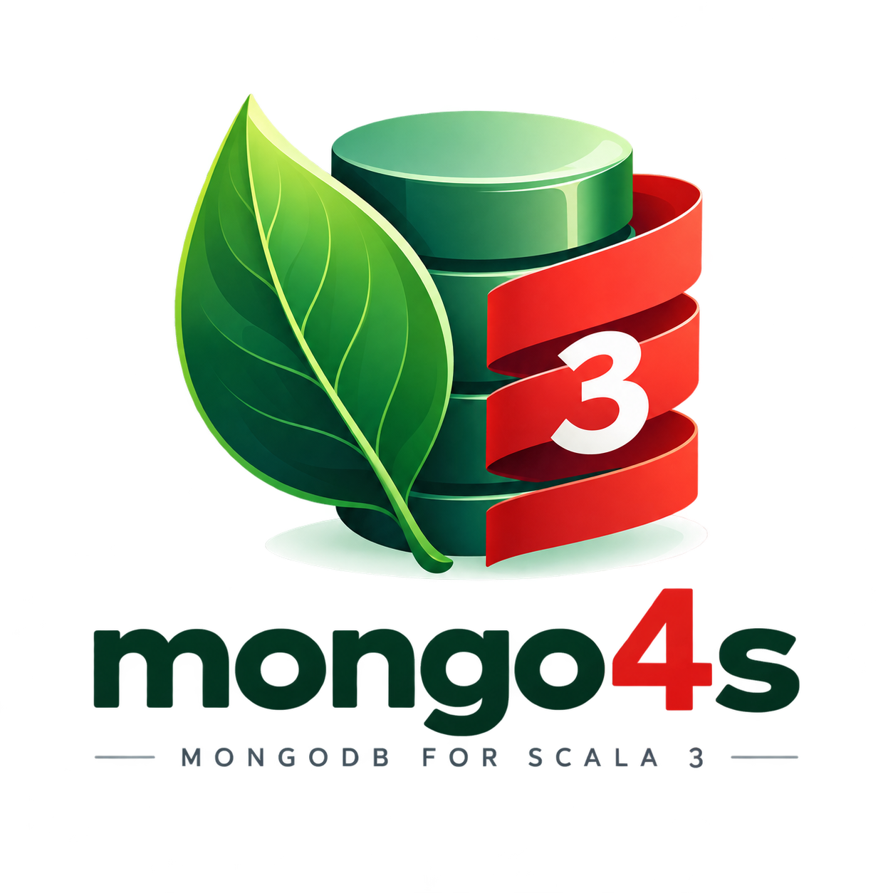

mongo4s
Effect-agnostic MongoDB client and repository layer for Scala 3 — any runtime, any BSON codec, AST-free by default.


No hardcoded cats-effect or fs2. The runtime (cats-effect / ZIO / Kyo / rapid) and the
BSON codec (your own derivation, or medeia / zio-bson / calypso) are independent modules, each wired in through
a
given import. core depends on neither.
mongo4s wraps the official mongodb-driver-reactivestreams directly — no mongo4cats
underneath. A type-safe Field/Filter/Update builder replaces string-keyed
queries, PrimaryKey turns an entity into single- or compound-key lookups, and
BaseMongoRepository gives you CRUD/batch operations over a collection for free. Every piece is
interpretable against a real MongoDB and an in-memory fake, so repositories are unit-testable
without a running database.
Quick start
Pick a runtime. The default codec (bson-direct) derives straight from your case class — AST-free, no
third-party codec library, no extra dependency beyond mongo4s-core itself:
libraryDependencies ++= Seq(
"org.mongo4s" %% "mongo4s-cats" % "0.3.0", // mongo4s-core + cats-effect integration
"org.mongo4s" %% "mongo4s-bson-direct" % "0.3.0", // ast-free bson codecs
"org.mongo4s" %% "mongo4s-bson-cats-data" % "0.3.0", // if you need NonEmptyList etc. codec instances
"org.mongo4s" %% "mongo4s-repositories" % "0.3.0", // if you need auto-generated CRUD repository ops for your model
)import cats.effect.{IO, IOApp}
import mongo4s.cats.CatsStream
import mongo4s.bson.direct.WireCodec
import mongo4s.{Field, MongoClient, PrimaryKey}
import mongo4s.repositories.BaseMongoRepository
import mongo4s.cats.CatsInstances.given
final case class User(id: String, name: String, age: Int) derives WireCodec
object User:
given PrimaryKey[User, String] = PrimaryKey.single("id")(_.id)
object Main extends IOApp.Simple:
def run: IO[Unit] =
for
client <- MongoClient.fromConnectionString[IO, CatsStream[IO][A]]("mongodb://localhost:27017")
db <- client.getDatabase("myapp")
collection <- db.getDirectCollection[User]("users")
users = BaseMongoRepository(collection)
_ <- users.insertOne(User("1", "Alice", 30))
alice <- users.findOne("1")
adults <- users.findByFilter(Field.of[User, Int](_.age).gte(18))
_ <- client.close
yield ()Swap mongo4s-cats for mongo4s-zio / mongo4s-kyo /
mongo4s-rapid and the matching *Instances.given import to change runtime — nothing
else changes. BsonEncoder/BsonDecoder for built-in types (String, Int,
Option, List, Vector, Set, Seq, …) resolve with
no import at all.
Already have a model on medeia, zio-schema, or calypso? Swap derives WireCodec +
getDirectCollection for derives MedeiaDocumentCodec/etc. + getCollection
(and BaseMongoRepository.create(db, "users") instead of constructing it from a collection
directly) — see BSON codecs below for all four backends.
Already have a MongoClientSettings built elsewhere (connection pool tuning, a custom CodecRegistry,
…)? Use MongoClient.fromSettings instead of fromConnectionString:
val settings = MongoClientSettings.builder().applyConnectionString(ConnectionString("mongodb://localhost:27017")).build()
client <- MongoClient.fromSettings[IO, S](settings)
For more examples see:
examples/src/main/scala/mongo4s/examples
— a shared domain model (opaque types, enums, nested case classes) run through every runtime/codec combination
(cats+medeia, ZIO+zio-bson, kyo+medeia, rapid+calypso), a repository example covering all three
BaseMongoRepository construction styles against bson-direct, and a sessions/transactions + typed
aggregation pipeline example on cats+medeia.
Core concepts
MongoClient[F, S] → MongoDatabase[F, S] → MongoCollection[F, S, A] mirror
the
driver's own hierarchy, wrapped in your effect F[_] and stream type S[_].
Field.of[E, A](_.someField) is a macro that reads a field selector at compile time — no strings, no
reflection — and gives you a typed path to build filters, updates, and sorts:
val adults = Field.of[User, Int](_.age).gte(18)
val named = Field.of[User, String](_.name).equalTo("Alice") && adults
val setAge = Field.of[User, Int](_.age).set(31)
val city = Field.of[Order, String](_.address.city).equalTo("Berlin") // dotted paths from nested selectors
PrimaryKey[E, K] turns an entity into a key-based filter — single field, a native _id
(ObjectId or your own encoder), or a compound key of up to four fields:
given PrimaryKey[User, String] = PrimaryKey.single("id")(_.id)
given PrimaryKey[Note, ObjectId] = PrimaryKey.objectId(_.id) // entity has its own ObjectId field
given PrimaryKey[Order, (String, Int)] = PrimaryKey.make(o => (o.userId, o.seq), k => "user_id" -> k._1, k => "seq" -> k._2)
inFilter on a compound key produces an $or of $ands; on a single field
it's
a plain $in — and an empty key list always produces Filter.none, so
findMany(Nil)/deleteMany(Nil) are safe no-ops instead of matching every document.
Sessions & transactions
client.startSession is fully manual — mongo4s hands you the driver ClientSession
and steps back. You own the whole lifecycle yourself: start the transaction, pass the session explicitly
with (using Some(session)) at each call site you want inside it, commit or abort, and close
the session when you're done — nothing here happens automatically:
import mongo4s.MongoSession
for
session <- client.startSession
_ <- MongoSession.startTransaction[IO](session)
_ <- users.insertOne(User("2", "Bob", 41))(using Some(session))
_ <- MongoSession.commitTransaction[IO, S](session) // or abortTransaction to roll back
_ <- IO.delay(session.close())
yield ()
Every MongoClient/MongoDatabase/MongoCollection/Repository
method
accepts the same (using session: Option[ClientSession] = None), so a
BaseMongoRepository
call can join an existing transaction the same way a raw collection call can.
The manual dance above never aborts on failure either — if the body throws, the transaction is just left
open until it times out server-side. client.withTransaction does the whole thing automatically
instead: starts a session, commits on success or aborts (then re-raises) on failure, and closes the session
either way — you don't manage any part of the lifecycle yourself, and the session is given implicitly to
everything inside the body, so no (using Some(session)) at each call site:
client.withTransaction {
users.insertOne(User("2", "Bob", 41)) // Option[ClientSession] is already given here
}
withTransaction is built entirely from Effect[F]'s own minimal vocabulary
(flatMap/handleErrorWith), so it works identically on every runtime. That also
means it only covers the "body raised an error" path — on cats-effect specifically, a hard cancellation of
the surrounding fiber won't trigger the abort/close, since Effect[F] has no notion of
cancellation the way cats.effect.MonadCancel does. Reach for MongoClientResource
(see Runtime backends) combined with your own Resource-based cleanup if
that stronger guarantee matters for a specific call site.
MongoClient.withTransaction is itself built on a lower-level
ClientSession.withTransaction: same automatic commit-on-success/abort-on-failure behavior,
but manual again about the session's own lifecycle — it doesn't close the session, since (like the fully
manual path above) it doesn't own one you got from startSession yourself. Reach for it directly
if you're reusing one
already-open session across more than one transaction:
for
session <- client.startSession
_ <- session.withTransaction(users.insertOne(User("2", "Bob", 41)))
_ <- session.withTransaction(users.insertOne(User("3", "Carol", 29))) // same session, second transaction
_ <- IO.delay(session.close())
yield ()Aggregation pipelines
aggregate takes a Seq[Stage[A]] — a typed pipeline-stage AST, mirroring
Filter/Update/Sort, instead of raw BsonDocuments — built
with
the same Field.of selectors:
import mongo4s.operations.{Sort, Stage}
val pipeline = Seq(
Stage.matching(Field.of[User, Int](_.age).gte(18)),
Stage.sortBy(Sort.asc(Field.of[User, String](_.name))),
Stage.limit(10),
)
val adults: IO[List[User]] = users.aggregate[User](pipeline).all
Stage covers
$match/$project/$sort/$limit/$skip/$count/$unwind/$lookup,
plus Stage.raw(document) as an escape hatch for anything else ($group included, for
now). Field references inside a Stage are always typed against the pipeline's starting document
type
A, the same way aggregate[B]'s own output type B is specified manually.
Change streams
watch exists at all three levels, matching the driver's own scope hierarchy —
MongoClient.watch (the whole deployment, needs a replica set/sharded cluster),
MongoDatabase.watch (one database), and MongoCollection.watch (one collection).
Every event is a ChangeEvent[A], not a bare BsonDocument:
final case class ChangeEvent[A](
operationType: OperationType, // com.mongodb's own enum — INSERT/UPDATE/DELETE/...
documentKey: Option[BsonDocument],
fullDocument: Option[A],
fullDocumentBeforeChange: Option[A],
updateDescription: Option[UpdateDescription], // updated/removed field paths, for UPDATE events
resumeToken: BsonDocument,
clusterTime: Option[BsonTimestamp],
)
fullDocument defaults to populated on both insert and update events
(FullDocument.UPDATE_LOOKUP) — MongoDB's own default only fills it in for inserts/replaces, leaving
it None for the far more common "what does the document look like now" update case unless asked
for explicitly. Always None for deletes. MongoCollection.watch decodes through the
collection's own codec (ChangeEvent[A]); MongoClient/MongoDatabase.watch
span more than one document shape so they default to ChangeEvent[BsonDocument] — use
watchAs[A] instead when you know the events will all decode the same way.
The optional pipeline: Seq[BsonDocument] matches against the change event's own shape
({operationType, fullDocument, ns, ...}), not the collection's document shape, so it stays raw
BsonDocument rather than a typed Stage[A] — a Stage-built
Field.of filter would render the wrong path ("age" instead of
"fullDocument.age").
BSON codecs
Every codec ultimately produces a BsonDocumentCodec[A] (entity ⇄ org.bson.BsonDocument)
or, for the AST-free path below, a WireCodec[A]. mongo4s never registers a global
CodecProvider, so backends never collide inside one process.
| Module | Backend | Notes |
|---|---|---|
mongo4s-bson-medeia |
medeia | derives BsonDocumentCodec |
mongo4s-bson-zio |
zio-schema-bson | via zio.schema.Schema |
mongo4s-bson-calypso |
calypso | hand-written forProductN codecs |
mongo4s-bson-direct |
mongo4s itself | WireCodec[A], AST-free — see below |
mongo4s-bson-cats-data |
cats-core | BsonEncoder/BsonDecoder/WireCodec for
NonEmptyList/Chain/NonEmptyVector/NonEmptySet/NonEmptyMap
|
bson-direct — AST-free WireCodec
medeia/zio-bson/calypso all build an intermediate org.bson.BsonValue tree before it ever reaches
the
driver. WireCodec[A] skips that: derived via Mirror, it writes straight to the
driver's
own streaming BsonWriter/BsonReader — the same low-level SPI jsoniter-scala uses for
JSON — no BsonDocument is ever built, on either side. No third-party codec dependency needed;
bson-direct is transitively pulled in by mongo4s-core.
import mongo4s.bson.direct.WireCodec
final case class Address(city: String, zip: String) derives WireCodec
final case class Person(id: String, name: String, tags: List[String], address: Address) derives WireCodec
sealed trait Shape derives WireCodec
object Shape:
final case class Circle(radius: Double) extends Shape derives WireCodec
final case class Rectangle(width: Double, height: Double) extends Shape derives WireCodec
Products, Option, List, nested case classes, sealed traits/enums (via a
_type discriminator field, written first), and self-/mutually-recursive types all derive directly —
recursive derivation defers behind a lazy val internally so a type's own given never
forces itself mid-construction. Anything with an existing BsonEncoder/BsonDecoder
bridges automatically, at the cost of one BsonValue per field instead of zero.
getDirectCollection registers the derived codec with the driver via
CodecRegistries.fromCodecs(...), so insert/find/replace/update/delete/bulkWrite decode straight to
A — genuinely zero BsonDocument construction on the hot path, not just a thinner
bridge:
final case class Person(id: String, name: String, age: Int) derives WireCodec
object Person:
given PrimaryKey[Person, String] = PrimaryKey.single("id")(_.id)
for
db <- client.getDatabase("myapp")
collection <- db.getDirectCollection[Person]("people")
repo = BaseMongoRepository(collection)
_ <- repo.insertOne(Person("1", "bob", 30))
yield ()
aggregate/distinct still go through
BsonDocumentCodec/BsonDecoder
on a direct collection (they're not the hot path); everything else — Filter/Update/
Field construction — is identical regardless of which codec backs the collection.
Field naming
By default derives WireCodec writes field and discriminator names exactly as they appear in the
Scala source. To match an existing collection's naming convention (snake_case, say), bring a
WireCodecConfig into scope before deriving — it reuses the same FieldNaming the query
layer already uses, rather than a second, independent naming mechanism:
import mongo4s.bson.direct.WireCodecConfig
given WireCodecConfig = WireCodecConfig.SnakeCase
final case class Person(firstName: String, lastName: String) derives WireCodec // writes "first_name"/"last_name"
Field naming and discriminator naming (the _type value for sealed traits/enums) are independently
configurable via WireCodecConfig(fieldNaming = ..., discriminatorNaming = ...). Pass the matching
FieldNaming to getDirectCollection's own naming parameter too, so
Filter/Update/Field queries render the same field names the codec wrote.
encodeEmptyCasesAsString = true writes a parameterless case as a bare BSON string instead of a
{"_type": "..."} document — only safe when nested inside another document, not at the root.
Hand-writing a codec: contramap/map/emap/imap
Most types don't need derives WireCodec at all — WireCodec[A] is just
WireEncoder[A] with WireDecoder[A], and both halves compose the same way
BsonEncoder/BsonDecoder already do elsewhere in mongo4s:
import mongo4s.bson.direct.WireCodec
enum Provider(val value: String):
case Stripe extends Provider("stripe")
case Adyen extends Provider("adyen")
object Provider:
def from(value: String): Option[Provider] = Provider.values.find(_.value == value)
given WireCodec[Provider] =
WireCodec[String].iemap(raw => from(raw).toRight(s"Unsupported provider: $raw"))(_.value)
imap (total in both directions) and iemap (decode can fail — reported as
BsonError.InvalidValue) replace a hand-rolled WireCodec.instance(...) for the
common case of one type wrapping another: no BsonWriter/BsonReader calls to write
by hand, and the wrap/unwrap logic lives in exactly one place instead of being duplicated across the encode
and decode sides.
ScalarWireCodec — reusing a WireCodec as a BsonEncoder
An opaque type over a primitive (opaque type UserId = String) typically needs a
WireCodec[UserId] for getDirectCollection and a
BsonEncoder[UserId] for Field.of[...].equalTo/PrimaryKey.make — two
typeclasses, normally two independently hand-written codecs. ScalarWireCodec[A] — the type
every primitive in WirePrimitiveInstances actually has — closes that gap:
import mongo4s.bson.direct.ScalarWireCodec
import mongo4s.bson.BsonEncoder
opaque type UserId = String
object UserId:
def apply(value: String): UserId = value
extension (id: UserId) def value: String = id
given ScalarWireCodec[UserId] = ScalarWireCodec[String].imap(UserId.apply)(_.value)
given BsonEncoder[UserId] = summon[ScalarWireCodec[UserId]].toBsonEncoder
toBsonEncoder builds one BsonValue per call — cheap on the query-construction path
BsonEncoder actually runs on, unlike materializing one for every field of every document, which
is exactly what WireCodec exists to avoid in the first place. ScalarWireCodec is
deliberately narrower than WireCodec: a derived case class or sum type
(derives WireCodec) is genuinely document-shaped, so it's never typed as
ScalarWireCodec — asking for one (ScalarWireCodec[SomeCaseClass]) fails to compile
instead of misbehaving at runtime.
bson-cats-data — cats.data support
NonEmptyList/Chain/NonEmptyVector/NonEmptySet/NonEmptyMap
get BsonEncoder/BsonDecoder and WireCodec instances from
mongo4s-bson-cats-data, delegating to the already-existing
List/Vector/Set/Map
instances rather than reimplementing BSON encoding:
import mongo4s.bson.catsdata.CatsDataBsonInstances.given // or CatsDataWireInstances.given for bson-direct
import cats.data.NonEmptyList
final case class Team(members: NonEmptyList[String]) derives BsonDocumentCodec // via medeia/zio-bson/calypso
NonEmptySet/NonEmptyMap additionally need a cats.Order for their
element/key type — the same Order you'd already need to construct one of these types directly.
Repositories
BaseMongoRepository[F, S, E, K] implements count/find/insert/upsert/update/delete/bulkWrite,
batched
by batchSize (default 500), over any MongoCollection[F, S, E], from either codec path:
BaseMongoRepository.create[F, S, E, K](db, "collection") // Projection.excludeId default
BaseMongoRepository.identified[F, S, E, K](db, "collection") // no projection — entities that store their own "_id"
BaseMongoRepository.objectId[F, S, E](db, "collection") // WithId[ObjectId, E], auto _id round-trip
WithId[Id, E] wraps an entity with a separately-typed id (type Oid[E] = WithId[ObjectId,
E])
and ships its own PrimaryKey/BsonDocumentCodec instances, for entities that don't
carry
their own id field.
Like MongoCollection, every Repository method takes (using session:
Option[ClientSession] = None) — a repository call can join a transaction the same
way a raw collection call can.
For unit tests, FakeMongoCollection implements MongoCollection in memory — the exact
same Filter/Update/Field AST the real driver interprets is interpreted
against a TrieMap instead, so repository logic is testable without aggregate/
distinct/watch and without a running MongoDB.
Runtime backends
Each runtime module provides given Effect[F] and given RsBridge[F, S]:
| Module | Effect | Stream | Notes |
|---|---|---|---|
mongo4s-cats |
cats.effect.IO | fs2.Stream | via fs2.interop.reactivestreams |
mongo4s-zio |
zio.Task | zio.stream.ZStream | via zio-interop-reactivestreams |
mongo4s-kyo |
kyo.IO | kyo.Stream | via kyo-reactive-streams |
mongo4s-rapid |
rapid.Task | rapid.Stream |
MongoClient.fromClient/fromSettings/fromConnectionString return a bare
F[MongoClient[F, S]] — you own calling .close. On mongo4s-cats,
MongoClientResource mirrors the same three constructor names, wrapped as a
cats.effect.Resource so .close runs on release automatically:
import mongo4s.cats.MongoClientResource
MongoClientResource.fromConnectionString[IO]("mongodb://localhost:27017").use: client =>
...
(zio/kyo/rapid equivalents, using each runtime's own resource-safety idiom instead of copying
Resource as-is, are on the roadmap.)
Modules
Published for Scala 3 under org.mongo4s:
"org.mongo4s" %% "mongo4s-<module>" % "0.3.0"| Kind | Module | Notes |
|---|---|---|
| core | mongo4s-core |
client/database/collection, Field/Filter/Update, PrimaryKey |
| bson | mongo4s-bson-core |
the scalar + document codec seam |
mongo4s-bson-direct |
WireCodec — AST-free, no third-party dependency | |
mongo4s-bson-cats-data |
cats.data (NonEmptyList/Chain/NonEmptyVector/NonEmptySet/NonEmptyMap) instances | |
mongo4s-bson-medeia |
bridges medeia | |
mongo4s-bson-zio |
bridges zio-schema-bson | |
mongo4s-bson-calypso |
bridges calypso | |
| runtime | mongo4s-cats |
cats-effect 3 + fs2 |
mongo4s-zio |
ZIO 2 + zio-streams | |
mongo4s-kyo |
kyo 1.0.0-RC6 | |
mongo4s-rapid |
rapid | |
| repositories | mongo4s-repositories |
BaseMongoRepository, Repository, WithId |
Benchmarks
Three separate JMH harnesses, one developer machine — directional ballparks, not hardware-independent authorities. Run them on your own hardware before deciding on the numbers alone.
Codec backends — to org.bson.BsonDocument
| Codec | Encode ops/s | Decode ops/s |
|---|---|---|
| calypso (forProductN) | ~3.36M | ~3.24M |
| medeia (derives) | ~1.40M | ~3.34M |
| zio-bson (zio-schema derived) | ~992k | ~2.98M |
| mongo4cats-zio-json | ~1.03M | ~920k |
| mongo4cats-circe | ~972k | ~665k |
All three mongo4s codec bridges beat both mongo4cats codecs by 3–5× on decode — the cost of case class ↔ circe/zio-json ↔ mongo4cats.Bson ↔ org.Bson instead of straight to org.bson.
AST-free wire codec — all the way to real bytes
| Path | Throughput | Alloc |
|---|---|---|
| direct encode | ~1.79M ops/s | 1792 B/op |
| medeiaFull encode | ~838k ops/s | 4712 B/op |
| direct decode | ~1.49M ops/s | 1088 B/op |
| medeiaFull decode | ~900k ops/s | 3200 B/op |
WireCodec is ~2.1× the throughput on encode, ~1.7× on decode, and allocates 2.6–2.9× less —
avoiding
medeia's own intermediate AST and the driver's own BsonDocument. In typical CRUD the
network
round trip dwarfs this; it matters for bulk-decode-heavy paths — large cursor streams, ETL, big aggregations.
Runtime overhead — real MongoDB, every backend
| Operation | cats | zio | rapid | kyo | mongo4cats-cats | mongo4cats-zio |
|---|---|---|---|---|---|---|
| insertOne | 2272 | 2562 | 2447 | 2505 | 2277 | 2504 |
| find(filter).all | 1432 | 1585 | 1551 | 1595 | 1316 | 1325 |
| find(filter).stream | 1404 | 1393 | 1557 | 1548 | 359 | 1147 |
| updateOne | 2002 | 2222 | 2198 | 2215 | 2138 | 2219 |
| count(filter) | 1804 | 2014 | 1996 | 1975 | 1905 | 1990 |
With a clean database on every trial, all six columns land within the same band — the TCP round trip to MongoDB
dominates at this scale. The one real outlier is mongo4cats-cats' find(filter).stream (359 ops/s
against its own .all's 1316) — it bridges through a hand-rolled Queue-backed
Subscriber instead of fs2.interop.reactivestreams, which every mongo4s
.stream() uses.
Codec choice under real MongoDB — mongo4s vs mongo4cats
The same harness isolates the codec dimension: four configs, all on cats-effect, against the same real MongoDB — mongo4s with bson-medeia vs bson-direct, and mongo4cats with circe vs zio-json. Two separate runs, same four stacks, two different questions.
| Operation | mongo4s+medeia | mongo4s+bson-direct | mongo4cats+circe | mongo4cats+zio-json |
|---|---|---|---|---|
| insertOne | 2321 | 2323 | 2381 | 2405 |
| insertMany (10 docs) | 2027 | 2012 | 2173 | 2115 |
| findOneById | 2047 | 2031 | 2184 | 2122 |
| findOneByFilter | 2117 | 2066 | 2270 | 2194 |
| findAll (~100 docs) | 1415 | 1477 | 1299 | 1310 |
| findStream (~100 docs) | 1426 | 1435 | 386 | 388 |
| updateOne | 2026 | 1988 | 2143 | 2159 |
| deleteOne | 1063 | 1062 | 1129 | 1108 |
| count | 1852 | 1847 | 1958 | 1916 |
Same finding as the runtime table above: all four land within the same band on
every
operation (differences within normal run-to-run noise, ~±5–10%) — the network round trip dominates regardless of
codec. The one outlier is mongo4cats' find(filter).stream, ~6× slower than everything else
and independent of codec (386 vs 388 ops/s for circe vs zio-json) — confirms it's the runtime's
Queue-backed Subscriber bridge, not the codec.
| Operation | mongo4s+medeia | mongo4s+bson-direct | mongo4cats+circe | mongo4cats+zio-json |
|---|---|---|---|---|
| insertOne | 49.0 | 46.6 | 25.3 | 24.6 |
| insertMany (10 docs) | 89.9 | 66.5 | 80.9 | 74.6 |
| findOneById | 60.6 | 58.8 | 39.5 | 36.6 |
| findOneByFilter | 60.5 | 58.7 | 39.3 | 36.5 |
| findAll (~100 docs) | 419.4 | 241.9 | 951.7 | 674.8 |
| findStream (~100 docs) | 427.5 | 240.3 | 3027.2 | 2746.2 |
| updateOne | 47.0 | 46.9 | 22.4 | 22.4 |
| deleteOne | 94.2 | 92.3 | 45.3 | 44.8 |
| count | 56.5 | 56.5 | 31.5 | 31.5 |
bson-direct allocates less than bson-medeia on every single operation — the AST-free advantage
measured in isolation above survives end-to-end through a real driver round trip, modestly on single-document
ops
(~4–6%) and much more on bulk reads (~42–44% less). mongo4cats allocates less than mongo4s on
single-document ops, but far more on bulk reads (2–13× more on findAll/findStream) — its own
mongo4cats.bson.BsonValue wrapper adds a full extra tree per document on top of org.bson's, and
that
cost multiplies with document count. Neither library is uniformly lighter — it depends on point-lookups vs bulk
scans.
Design notes
- Scala 3 only.
given-based throughout; derivation usesMirrorand inline, no runtime reflection. - Effect-agnostic by construction.
coredepends on neither cats-effect nor fs2 — a runtime module is ~twogiveninstances. - No global
CodecProvider. Every codec is resolved (and, for bson-direct, registered) per-collection, never process-wide. - Own filter/update AST — interpretable both to a real
Bsonquery and, for tests, against an in-memory map. - Batching is empty-list-safe —
inFilter(Nil)isFilter.none, not "match everything." BaseMongoRepositoryis a base class you extend, not a generated one — declare extra domain queries directly againstcollection/Filter/Field.